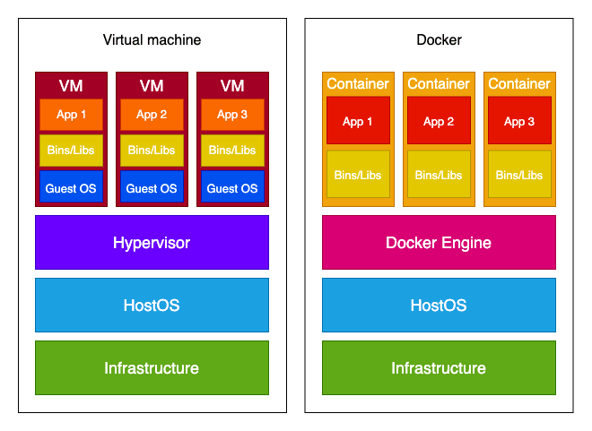

Docker for Beginners¶
Containers and Virtual Machines¶
Containers and virtual machines are similar in that they allow multiple apps to run on the same
Their main difference is in the operating system.
While containers uses the host's operating system, each virtual machine has its own guest operating system on top of the host's operating system.

if you have an application that needs to run on different operating systems, a virtual machine is the way to go.
But if that's not a requirement, Docker has multiple advantages over a virtual machine:
- Lighter-weight
- Faster to build
- Can be easily ported across different platforms
- Less resource intensive
- Scaling up and duplicating is easier
Docker¶
Docker Engine¶
When people refer to Docker, they're typically referring to Docker Engine.
Docker Engine is the underlying open source containerization technology for building, managing, and running containerized applications
It's a client-server application with the following components:
- Docker daemon (called dockerd) is a service that runs in the background that listens for Docker Engine API requests and manages Docker objects like images and containers.
- Docker Engine API is a RESTful API that's used to interact with Docker daemon.
- Docker client (called docker) is the command line interface used for interacting with Docker daemon. So, when you use a command like docker build, you're using Docker client, which in turn leverages Docker Engine API to communicate with Docker daemon.
Docker Desktop¶
While Docker Engine is included with Docker Desktop, it's important to understand that Docker Desktop is not the same as Docker Engine
Docker Desktop is an integrated development environment for Docker containers
It makes it much easier to get your operating system configured for working with Docker.
Docker Concepts¶
there are three core concepts:
-
Dockerfile
- a text file that serves as a blueprint for your container. In it, you define a list of instructions that Docker uses to build an image.
-
Image
- a read-only embodiment of the Dockerfile. It's built out of layers -- each layer corresponds to a single line of instructions from a Dockerfile.
-
Container
- running a Docker image produces a container, which is a controlled environment for your application. If we draw parallels with object-oriented programming, a container is an instance of a Docker image.
A Dockerfile is used to create a Docker image, which is then used to create (multiple) Docker containers.

Dockerfile¶
a Dockerfile is a text file that contains instructions for Docker on how to build an image. By default, a Dockerfile has no extension, but you can add one if you need more than one -- e.g., Dockerfile.prod.
Here's an example of a very simple Dockerfile:
FROM python:3.10-slim-buster
WORKDIR /usr/src/app
ENV PYTHONDONTWRITEBYTECODE 1
ENV PYTHONUNBUFFERED 1
RUN pip install --upgrade pip
COPY ./requirements.txt .
RUN pip install -r requirements.txt
COPY . .
CMD uvicorn main:app --reload --host 0.0.0.0 --port 8000
The majority of the most widely used commands can be seen in the above Dockerfile. Let's look at each of them in detail...
FROM¶
All Dockerfiles include a parent/base image on which the new image will be built. You use the FROM instruction to define the parent image:
Note: A valid Dockerfile always includes a FROM instruction.
parent and base image terms are sometimes used interchangeably, there's a difference between them. A parent image has its own parent image. Meanwhile, a base image has no parent; it starts with FROM scratch.
Alpine image is a base image and Python:alpine is a parent image (whose parent (base) image is actually the alpine image).
It's possible to create a base image on your own, but the probability of you needing your own image is small.
You can find parent images on Docker Hub, which is Docker's library/registry for Docker images.
Notes about python:3.10-slim-buster¶
The number tells you which version of the technology the image uses
- (e.g., the python:3.11.0a5 image uses Python version 3.11.0a5 while node:18.9.0 uses Node version 18.9.0). You'll probably want to avoid any versions with rc in it (e.g., python:3.11.0rc2) since rc means release candidate.
image uses Python version 3.11.0a5 while node:18.9.0 uses Node version 18.9.0). You'll probably want to avoid any versions with rc in it (e.g., python:3.11.0rc2) since rc means release candidate.
Use Small Docker Base Images for best practices on which base image to use¶
Smaller Docker images are more modular and secure.
RUN¶
The RUN instruction executes any commands in a new layer on top of the current image and commits the result.
ENV¶
You use the ENV instruction to set an environment variable. This variable will be available in all subsequent instructions.
CMD and ENTRYPOINT¶
Some Docker instructions are so similar it can be hard to understand why both commands are needed. One of those "couples" are CMD and ENTRYPOINT.
similarities CMD and ENTRYPOINT both specify a command / an executable that will be executed when running a container. Unlike RUN, which executes the command right away (the result is used in the image layer), the CMD/ENTRYPOINT command in the build-up specifies the command that will be used only when the container starts.
You can have only one CMD/ENTRYPOINT instruction in a Dockerfile, but it can point to a more complicated executable file.
There's actually only one difference between those instructions¶
CMD can easily be overridden from Docker CLI.
You should use CMD if you want the flexibility to run different executables depending on your needs when starting the container. If you want to clearly communicate that command is not meant to be overridden and prevent accidentally changing it, use ENTRYPOINT.
You'll probably use one or the other. If you don't use one, the container will be stopped immediately since there's no reason for it to exist (the exception being if you're also using Docker Compose).
You can have only one CMD instruction in a Dockerfile, but it can point to a more complicated executable file. If you have more than one CMD, only the last CMD will take effect. The same goes for the ENTRYPOINT instruction.
You may also use both CMD and ENTRYPOINT in the same Dockerfile, in which case CMD serves as the default argument for the ENTRYPOINT.
Example of CMD instruction usage:
here's a big chance you'll see the ENTRYPOINT argument as an executable file since commands that should be executed are often more than a one-liner.
And this is what the entrypoint.sh file might look like:
ADD and COPY¶
Another pair similar to one another is ADD and COPY.
Both instructions copy new files or directories from the path to the filesystem of the image at the path:
ADD can copy from remote file URLs (for example, it allows adding a git repository to an image directly) and directly from a compressed archive (ADD will automatically unpack the contents to the given location).
You should prefer COPY over ADD unless you specifically need one of the two additional features of ADD -- i.e., downloading example files or unpacking a compressed file
Examples of ADD and COPY instruction usage:
# copy local files on the host to the destination
COPY /source/path /destination/path
COPY ./requirements.txt .
# download external file and copy to the destination
ADD http://external.file/url /destination/path
ADD --keep-git-dir=true https://github.com/moby/buildkit.git#v0.10.1 /buildkit
# copy and extract local compresses files
ADD source.file.tar.gz /destination/path
Image¶
An image might be the most confusing concept of the three. You create a Dockerfile and then use a container, but an image lies between those two.
- image is a read-only embodiment of a Dockerfile that's used to create a Docker container.
- It consists of layers -- each line in a Dockerfile makes one layer.
- You can't change an image directly; you change it by changing the Dockerfile.
- You don't directly use an image either; you use a container created from an image.
The most important image-related tasks are:
- building images from Dockerfiles
- listing all the built images
- removing images
Building¶
To build an image from a Dockerfile, you use the docker image build command.
This command requires one argument: either a path or URL of the context.
This image will use the current directory as a context:
There are a number of options you can provide.
For example, -f is used to specify a specific Dockerfile when you have multiple Dockerfiles (e.g., Dockerfile.prod) or when the Dockerfile isn't in the current directory (e.g., docker image build . -f docker/Dockerfile.prod).
Probably the most important is the -t tag that is used to name/tag an image.
When you build an image, it gets assigned an ID. Contrary to what you might expect, the IDs are not unique. If you want to be able to easily reference your image, you should name/tag it. With -t, you can assign a name and a tag to it
Here's an example of creating three images: one without the usage of -t, one with a name assigned, and one with a name and a tag assigned.
$ docker image build .
$ docker image build . -t hello_world
$ docker image build . -t hello_world:67d19c27b60bd782c9d3600ae914604a94bddfd4
$ docker image ls
REPOSITORY TAG IMAGE ID CREATED SIZE
REPOSITORY TAG IMAGE ID CREATED SIZE
hello_world 67d19c27b60bd782c9d3600ae914604a94bddfd4 e03784993f22 25 minutes ago 181MB
hello_world latest e03784993f22 26 minutes ago 181MB
<none> <none> 7a615d108866 29 minutes ago 181MB
For the image that was built without a name or tag, you can only reference it via its image ID. Not only is it difficult to remember, but, again, it might not be unique (which is the case above). You should avoid this
For the image that only has a name (-t hello_world), the tag is automatically set to latest. You should avoid this as well
Listing¶
The docker image ls command lists all built images.
Example
docker image ls
REPOSITORY TAG IMAGE ID CREATED SIZE
hello_world latest c50405e84d39 9 minutes ago 245MB
<none> <none> 2700a62cd8f1 42 hours ago 245MB
alpine/git latest 692618a0d74d 2 weeks ago 43.4MB
todo_app test 999740882932 3 weeks ago 1.03GB
Removing¶
There are two use cases for removing images:
- You want to remove one or more selected images
- You want to remove all the unused images (you don't care which images specifically)
- For the first case, you use
docker image rm - for the second, you use
docker image prune.
Remove¶
docker image rm removes and untags the selected image(s). It requires one argument: The reference to the image(s) you want to remove. You can reference it by name or short/long ID.
If you think back to the explanation of image tagging... there can be multiple images with a different name but the same ID. If you try to remove the image by image ID and multiple images with that ID exist, you'll get an image is referenced in multiple repositories error. In that case, you'll have to remove it by referencing it by name. If you wish to remove all images with the same ID, you can use the -f flag
Example of unsuccessful and successful image removal:
docker image ls
REPOSITORY TAG IMAGE ID CREATED SIZE
test1 latest 4659ba97837b 41 seconds ago 245MB
test2 latest 4659ba97837b 41 seconds ago 245MB
test latest 4659ba97837b 41 seconds ago 245MB
$ docker rmi 4659ba97837b
Error response from daemon: conflict: unable to delete 4659ba97837b (must be forced) - image is referenced in multiple repositories
$ docker rmi test2
Untagged: test2:latest
$ docker image ls
REPOSITORY TAG IMAGE ID CREATED SIZE
test1 latest 4659ba97837b 4 minutes ago 245MB
test latest 4659ba97837b 4 minutes ago 245MB
Prune¶
docker image prune removes dangling images.
Since prune is a command that can be used for cleaning containers, images, volumes, and networks, this command doesn't have a shorter version. If you use the -a flag, all unused images are removed (i.e., docker image prune -a).
- A dangling image is an image that is not tagged and is not referenced by any container.
- An unused image is an image that isn't associated with at least one container
docker image prune
WARNING! This will remove all dangling images.
Are you sure you want to continue? [y/N]
Deleted Images:
deleted: sha256:c9a6625eb29593463ea43aab4053090427bf29cc59bc97917b3298fda6a94e8a
deleted: sha256:284f940f39c3ef5be09440e23fdefdb00df0791344db5c340a9d11979a98039e
deleted: sha256:1934187bf17ccf4e754842a4ceeacf5c14aaa63ba7a04c0c520f53946426c902
Container¶
a container, which is a controlled environment for your application.
An image becomes a container when it's run on Docker Engine.
The main operations you can do with a container are
- running a container
- listing all the containers
- stopping a container
- removing a container
Running¶
You can either create a new container of an image and run it, or you can start an existing container that was previously stopped.
Run¶
The docker container run command actually combines two other commands, docker container create and docker container start.
docker container run my_image
# the same as:
$ docker container create my_image
88ce9c60aeabbb970012b5f8dbae6f34581fa61ec20bd6d87c6831fbb5999263
$ docker container start 88ce9c60aeabbb970012b5f8dbae6f34581fa61ec20bd6d87c6831fbb5999263
You need to provide one argument: The image you want to use for the container.
When you run the run command, Docker creates a writable container layer over the specified image and then starts it using the specified command (CMD/ENTRYPOINT in the Dockerfile).
he most important option is --publish/-p, which is used to publish ports to the outside world. Although it is technically possible to run a container without a port, it's not very useful since the service(s) running inside the container wouldn't be accessible outside the container. You can use --publish/-p for both the create and run commands:
Here's an example of how that looks like:
You can run your container in detached mode by using --detach/-d, which lets you keep using the terminal.
If you run a container in detached mode, Docker will just return the container ID:
docker container run -p 8000:8000 -d my_image
0eb20b715f42bc5a053dc7878b3312c761058a25fc1efaffb7920b3b4e48df03
Your container gets a unique, quirky name by default, but you can assign your own name:
docker container run -p 8000:8000 --name my_great_container my_image
```
### Start
use the docker container start command. Since with this command, you're starting an existing container, you have to specify the container instead of an image (as with docker container run).
Another difference from docker container run is that docker container start by default runs the container in the detached mode. You can attach it using --attach/-a (reverse from docker container run -d).
```yaml
docker container start -a reverent_sammet
Listing¶
You can list all running containers with docker container ls.
ocker container ls
CONTAINER ID IMAGE COMMAND CREATED STATUS PORTS NAMES
0f21395ec96c 9973e9c65229 "/bin/sh -c 'gunicor…" 6 minutes ago Up 6 minutes 0.0.0.0:80->8000/tcp shopping
73bd69d041ae my_image "/bin/sh -c 'uvicorn…" 2 hours ago Up 2 hours 0.0.0.0:8000->8000/tcp my_great_container
If you want to also see the stopped containers, you can add the -a flag:
docker container ls -a
CONTAINER ID IMAGE COMMAND CREATED STATUS PORTS NAMES
0f21395ec96c 9973e9c65229 "/bin/sh -c 'gunicor…" About a minute ago Up About a minute 0.0.0.0:80->8000/tcp shopping
73bd69d041ae my_image "/bin/sh -c 'uvicorn…" 2 hours ago Up 2 hours 0.0.0.0:8000->8000/tcp my_great_container
0eb20b715f42 my_image "/bin/sh -c 'uvicorn…" 2 hours ago Exited (137) 2 hours ago agitated_gagarin
489a02b8cfac my_image "/bin/sh -c 'uvicorn…" 2 hours ago Created
CONTAINER ID IMAGE COMMAND CREATED STATUS PORTS NAMES
73bd69d041ae my_image "/bin/sh -c 'uvicorn…" 2 hours ago Up 2 hours 0.0.0.0:8000->8000/tcp my_great_container
- CONTAINER ID (73bd69d041ae) and its NAMES (my_great_container) are both unique, so you can use them to access the container.
- IMAGE (my_image) tells you which image was used to run the container.
- CREATED is pretty self-explanatory: when the container was created (2 hours ago).
- We already discussed the need for specifying a command for starting a container... COMMAND tells you which command was used ("/bin/sh -c 'uvicorn…").
- STATUS is useful when you don't know why your container isn't working (Up 2 hours means your container is running, Exited or Created means it's not)
Some of the information is truncated. If you want the untruncated version, add --no-trunc.
Stopping¶
To stop a container, use docker container stop. The name or ID of the stopped container is then returned.
docker container stop my_great_container
my_great_container
$ docker container stop 73bd69d041ae
73bd69d041ae
A container can be started again with docker container start.
Removing¶
Similar to images, to remove a container, you can either:
- remove one or more selected containers via docker container rm.
- remove all stopped containers via docker container prune
Example of docker container rm:
Example of docker container prune:
docker container prune
WARNING! This will remove all stopped containers.
Are you sure you want to continue? [y/N] y
Deleted Containers:
0f21395ec96c28b443bad8aac40197fe0468d24e0eed49e5f56011de1c81b589
80c693693f3d99999925eae5f4bbfc03236cde670db509797d83f50e732fcf31
0eb20b715f42bc5a053dc7878b3312c761058a25fc1efaffb7920b3b4e48df03
1273cf44c551f8ab9302e6d090e3c4e135ca6f7e1ab3d90a62bcbf5e83ba9342
Commands¶
ommand Alias Usage docker image build docker build Build an image from a Dockerfile docker image ls docker images List images docker image rm docker rmi Remove selected images docker image prune N/A Remove unused images docker container run docker run Create the container and start it docker container start docker start Start an existing container docker container ls docker ps List all containers docker container stop docker stop Stop a container docker container rm docker rm Remove a container docker container prune N/A Remove all stopped containers
Using a Dockerfile as a blueprint, you build an image. Images can then be used to build other images and can be found on Docker Hub. Running an image produces a controlled environment for your application, called a container.
imortant link
https://docs.docker.com/get-started/docker-overview/ https://docs.docker.com/engine/storage/ https://docs.docker.com/compose/ https://docs.docker.com/engine/storage/volumes/ https://docs.docker.com/reference/dockerfile/#dockerignore-file https://docs.docker.com/compose/gettingstarted/